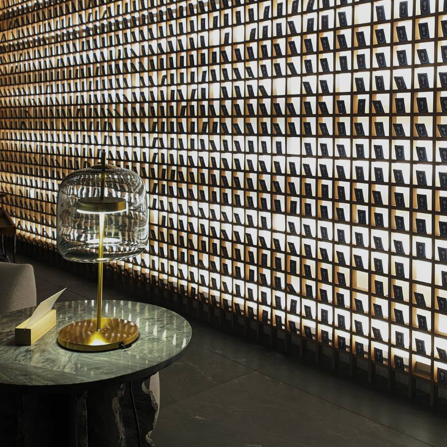
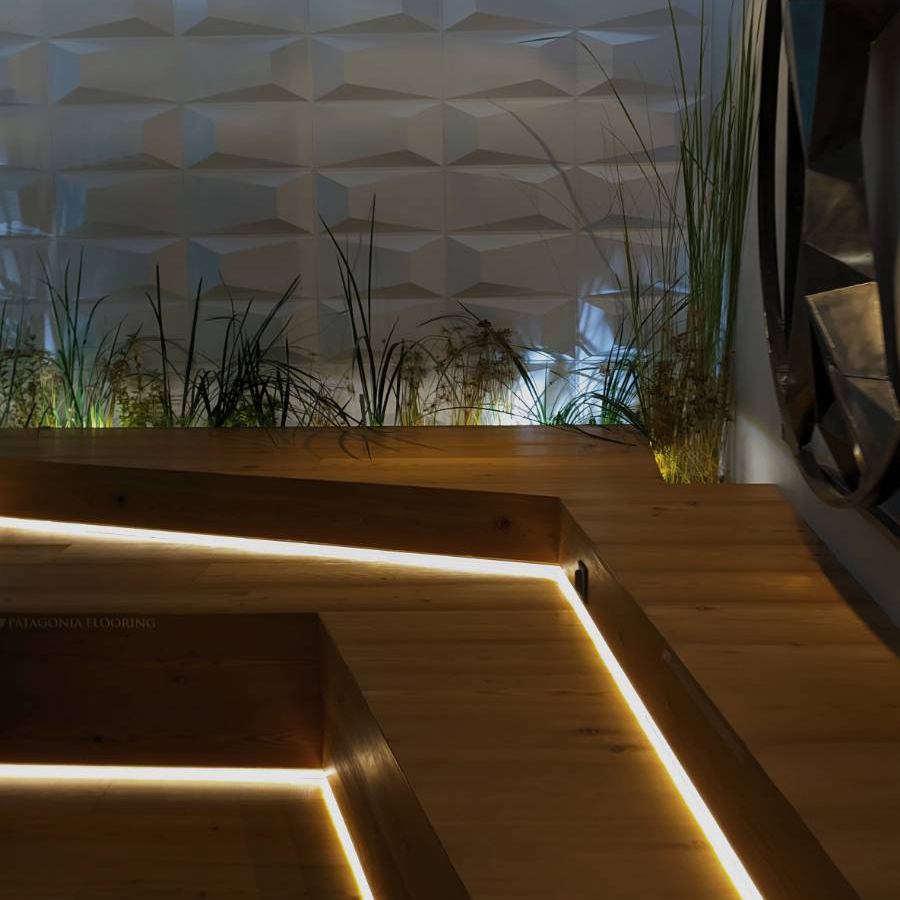
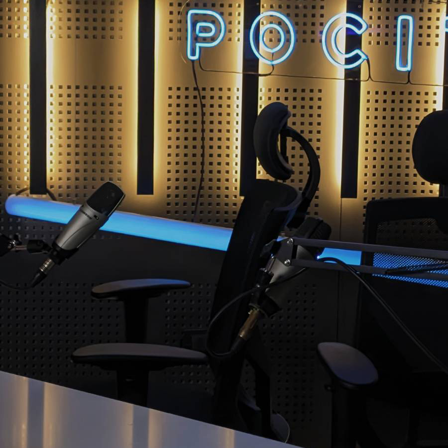
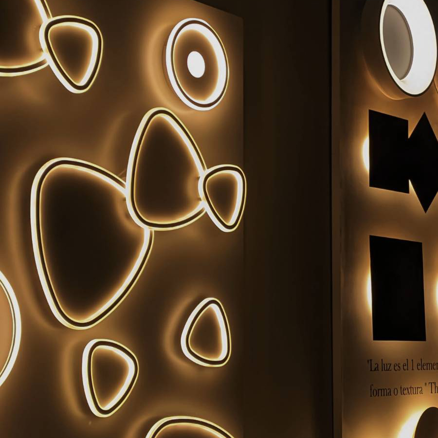

A fresh reinterpretation of an hotel lobby. An oasis
surrounded by natural microworlds, all in the middle of the
city.

Integration of nature, new textures and diverse lighting.
Why do common spaces have to be boring? Why can't it be an
enjoyable space to relax?

The social media impact has reached the architecture and
design field. Streaming or recording a podcast episode from
home has never looked this good.

Lighting is the key to determine a room's aura. In casa FOA,
you can see in person multiple lighting designs to inspire
you in your interior design journey
The contemporary and urban lifestyle is defined by
functionality, sustainable luxury, mixes of trends, the modern
and the old coexisting, and the search for comfort and moments
of relaxation in the midst of the daily hustle
-Exhibitor